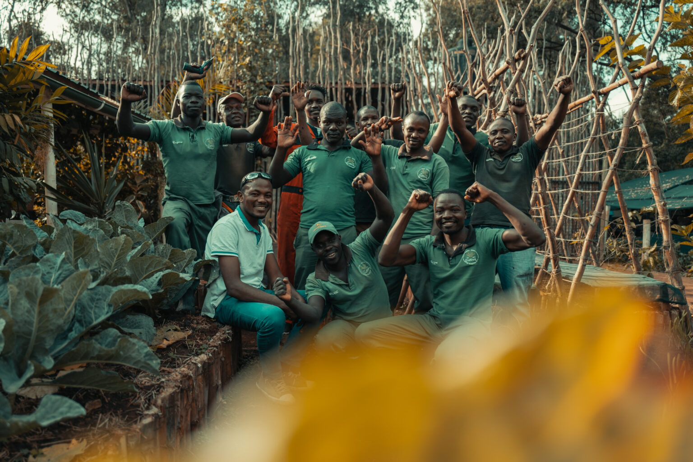
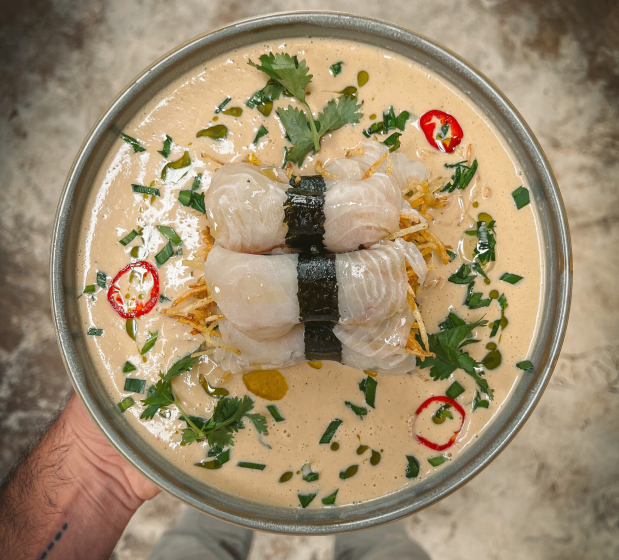
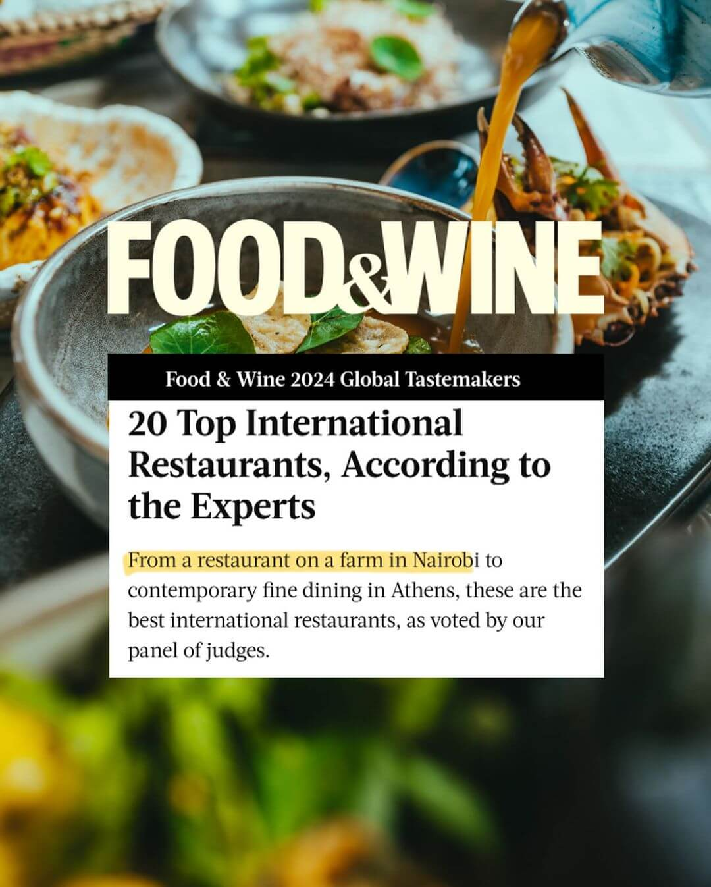

Potential, placed carefully.

A living restaurant · Nairobi
The farm writes
the menu.
We simply listen.
Food & Wine · Top 20 International Restaurants
01 · Before the plate
Everything begins
with what is ready today.
Cultiva does not force ingredients into a fixed menu. The season leads. The soil answers. The kitchen follows.
That makes every meal part of a larger rhythm: seed, care, harvest, craft, table.
The hands behind today's menu
Nothing here
exists alone.
Growers. Gardeners. Chefs. Artisans. Hosts. Guests. Every plate carries more than ingredients.
Community is not a page on the website. It is the restaurant.
02 · Soil to plate
A meal is a chain
of care.
Life built below the surface.
Picked when flavour says ready.
Technique without waste.
The circle becomes complete.

Harvest todayThe living menu
Built around the ingredient.
Not the category.
Cold, warm, raw, charred, fermented, bright. The menu changes because the farm does.
Time is an ingredient
Fermentation
is rebellion.
No fluorescent syrups pretending to be fruit. No shortcuts pretending to be flavour. Just patience, microbes, herbs, fruit and time.
Food & Wine · 2024
Top 20
International
Restaurants.
Global recognition for a restaurant rooted in Nairobi soil.

The day ends at the table
Become part
of the harvest.
Not everyone grows food. Everyone can appreciate where it comes from.
Reserve your experience ↗